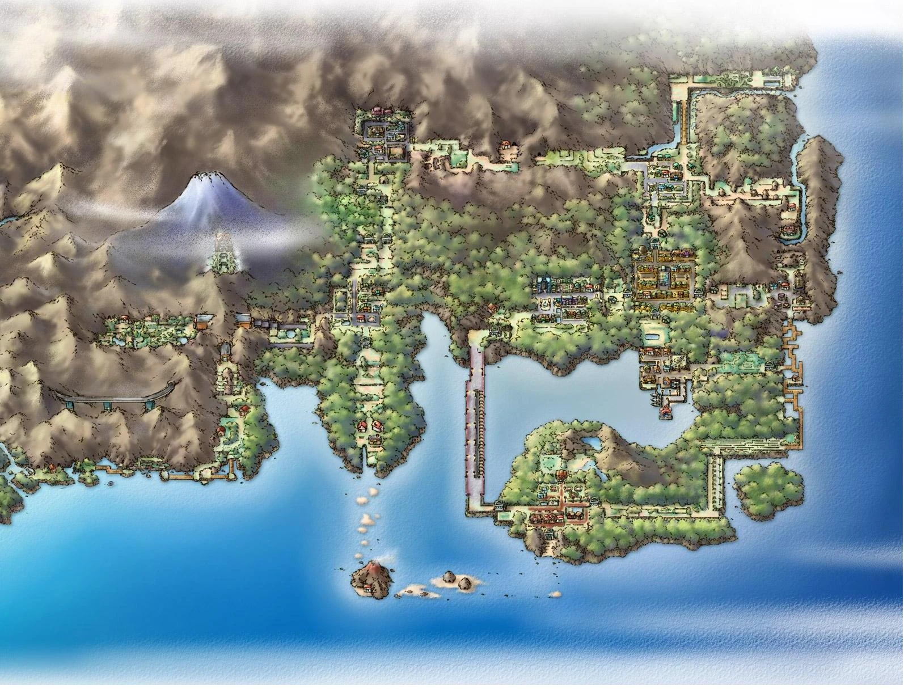
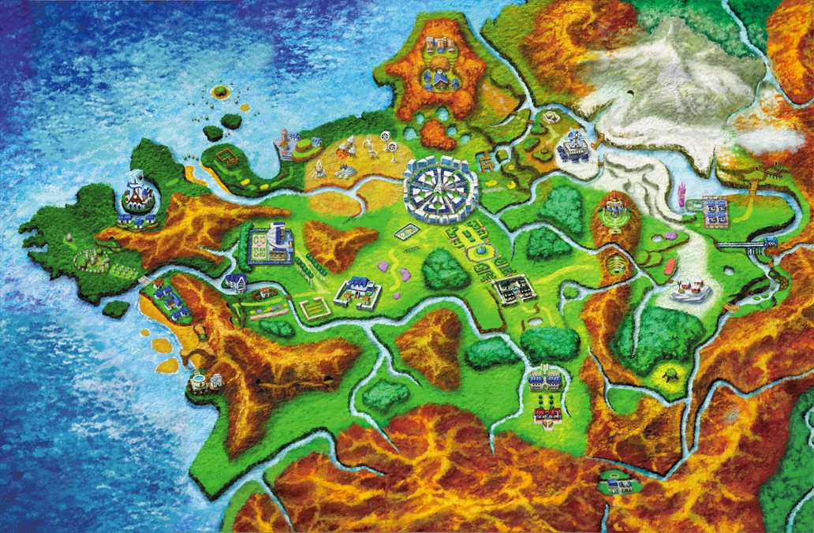

Pokemon a lo largo de los años ha tenido multiples juegos en los cuales han sido divididos en regines los cuales son equivalentes a paises en el mundo pokemon, las cuales estarian basadas en lugares del mundo real, ahora vamos a hacer un repaso por las regines ya existententes en pokemon junto a unos datos de cada una.
La primera generacion de pokemon, toma en lugar en la region kanto, la cual esta basada en la region Kanto de Japon, como las areas metropolitanas de Tokio, Kanagawa, Chiba, Saitama, Ibaraki, Tochigi y Gunma, y también la isla de Honshu.

La segunda generación de Pokemon toma lugar en la región Johto la cual esta basada en la Región Kansai de Japon, Su diseño geográfico y cultural se inspira fuertemente en prefecturas como Kioto, Nara, Osaka y la parte oeste de Chūbu/Shikoku, destacando por sus templos antiguos, tradición y zonas rurales, Johto se encuentra al Oeste de Kanto.

La tercera generación de pokemon ocurre en la región Hoenn la cual esta basada está basada principalmente en la isla de Kyushu, situada al sur de Japón. Esta inspiración geográfica se caracteriza por ser subtropical, incluyendo volcanes, numerosas islas pequeñas circundantes y una geografía orientada hacia el mar, reflejada en el diseño de las ciudades y la abundancia de rutas acuáticas.

La Región Sinnoh abarca la Cuarta generación de pokemón esta se basa principalmente en la isla de Hokkaido, la más septentrional de Japón, incluyendo también la parte sur de la isla rusa de Sajalín. Su diseño incorpora la geografía fría y montañosa de esta región, incluyendo referencias a la cultura indígena Ainu.

La región Unova (Teselia en españa) abarca la quinta generación de pokemón, a diferencia de las ultimas 4 regiones Unova es la primera región de pokemon que no esta basa en una región de Japon en su lugar está basada en la ciudad de Nueva York y sus distritos colindantes como Brooklyn, parte de Queens e incluso el estado de Nueva Jersey.

La sexta generación de pokemón es la primera generación que esta basada en Europa, Kalos está basada en la zona norte de Francia, la cual es conocida popularmente como El Hexágono, coincidiendo en ese sentido geográficamente a la perfección.

La septima generación de pokemon nos lleva a la tropical región de Alola, es una región única en el mundo Pokémon, dividida en cuatro islas naturales y una isla artificial. Inspirada en Hawái

La Octava generación de Pokemón Galar, se basa en el Reino Unido, estando la mayor parte de la región basada en Inglaterra y Gales, mientras que la Isla de la Armadura se basa en la Isla de Man, y las Nieves de la Corona en Escocia. Asimismo, la región está invertida verticalmente con respecto a su contraparte del mundo real.

La Novena y ultima generación hasta la fecha Paldea, Se inspira en la península ibérica, principalmente en España. Su capital, Ciudad Meseta, está inspirada en las ciudades españolas de Madrid, Toledo, Barcelona y Zaragoza, de las que toma gran parte de su arquitectura; geográficamente, queda próxima a lo que serían Ciudad Real y Toledo.